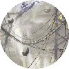

INDEX
LORE
DEVELOPMENT
NARRATIVE
REGIONS
CRITICISMS & ISSUES
The new regions introduced by the Watcher DLC.
Watcher Map

Aether Ridge
Stardust in Heat Ducts
Fetid is Not Future Salination
Signal Spires
SNDGE's (OG Superstructure) Return
Outer Rim
Breakdown of a Starcatcher in OTR
Throne is a Starcatcher
OTR and Depths Parallels
Unfortunate Evolution
UE Isn't Future Pebbles
Fringe Rot Regions
Differences Between Fringe Regions and Vanilla Counterparts